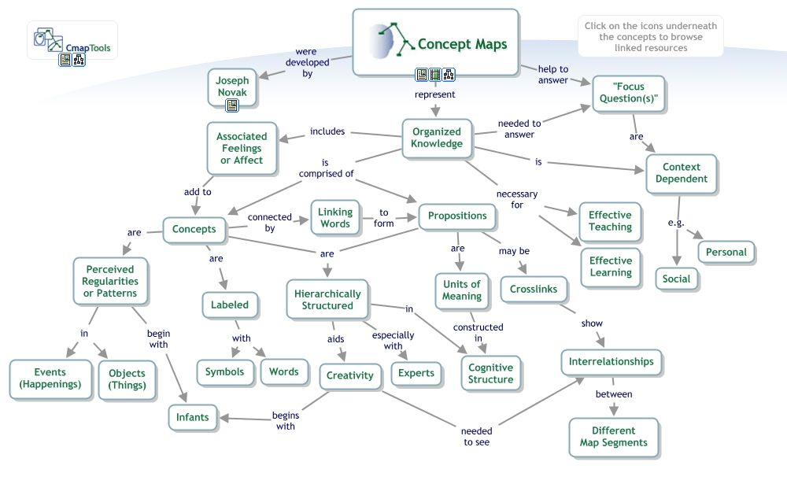

Concept / knowledge map
About
A concept map is a node-and-link diagram in which labeled nodes represent concepts and labeled, usually directional links describe the relationships between them, so that each node-link-node triple reads as a short proposition. Developed by Joseph Novak from research on learning, it externalizes the structure of knowledge in a domain — not just which ideas exist but how they relate, depend on, and qualify one another. Because the links are named, a concept map carries more meaning than an unlabeled graph: it shows the reasoning, not just the connections.
When to use
Use a concept map to capture and align understanding of a complex subject domain, to support learning and onboarding, or to externalize how a body of ideas fits together before designing content or structure around it.
When not to use
Avoid a concept map when the content is a strict hierarchy — a tree or IA diagram represents that more cleanly — or when you are describing a sequence of steps, where a flow or swimlane diagram fits better than a web of relationships.
References
Examples
Click any example to view full size and visit the original source.
